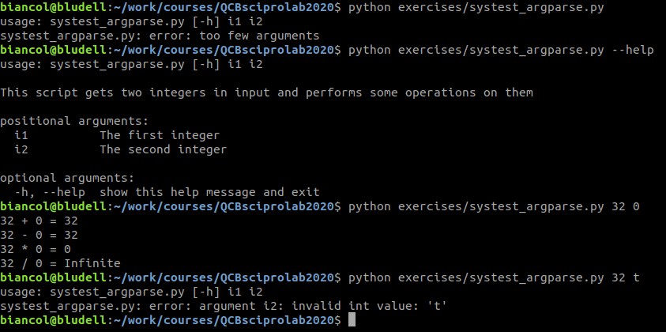
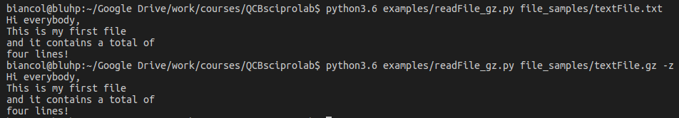
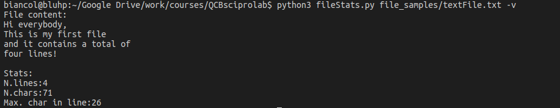
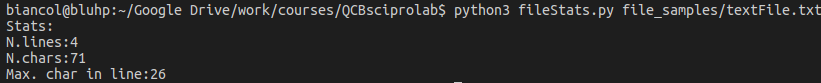

Module 1, Practical 7¶
In this practical we will see how to get input from the command line.
Gentle reminder on functions¶
Reminder. The basic definition of a function is:
def function_name(input) :
#code implementing the function
...
...
return return_value
Functions are defined with the def keyword that proceeds the function_name and then a list of parameters is passed in the brackets. A colon : is used to end the line holding the definition of the function. The code implementing the function is specified by using indentation. A function might or might not return a value. In the first case a return statement is used.
Getting input from the command line¶
To call a program my_python_program.py from command line, you just have to open a terminal (in Linux) or the command prompt (in Windows) and, assuming that python is present in the path, you can cd into the folder containing your python program, (eg. cd C:\python\my_exercises\) and just type in python3 my_python_program.py or python my_python_program.py In case of arguments to be passed by command line, one has to put them after the specification of the program name (eg.
python my_python_program.py parm1 param2 param3).
Python provides the module sys to interact with the interpreter. In particular, sys.argv is a list representing all the arguments passed to the python script from the command line.
Consider the following code:
[ ]:
import sys
"""Test input from command line in systest.py"""
if len(sys.argv) != 4: #note that this is the number of params +1!!!
print("Dear user, I was expecting 3 params. You gave me ",len(sys.argv)-1)
exit(1)
else:
for i in range(0,len(sys.argv)):
print("Param {}:{} ({})".format(i,sys.argv[i],type(sys.argv[i])))
Invoking the systest.py script from command line with the command python3 exercises/systest.py 1st_param 2nd 3 will return:
Param 0: exercises/systest.py (<class 'str'>)
Param 1: 1st_param (<class 'str'>)
Param 2: 2nd (<class 'str'>)
Param 3: 3 (<class 'str'>)
Invoking the systest.py script from command line with the command python3 exercises/systest.py 1st_param will return:
Dear user, I was expecting three parameters. You gave me 1
Note that the parameter at index 0, sys.argv[0] holds the name of the script, and that all parameters are actually strings (and therefore need to be cast to numbers if we want to do mathematical operations on them).
Example: Write a script that takes two integers in input, i1 and i2, and computes the sum, difference, multiplication and division on them.
[ ]:
import sys
"""Maths example with input from command line"""
if len(sys.argv) != 3:
print("Dear user, I was expecting 2 params. You gave me ",len(sys.argv)-1)
exit(1)
else:
i1 = int(sys.argv[1])
i2 = int(sys.argv[2])
print("{} + {} = {}".format(i1,i2, i1 + i2))
print("{} - {} = {}".format(i1,i2, i1 - i2))
print("{} * {} = {}".format(i1,i2, i1 * i2))
if i2 != 0:
print("{} / {} = {}".format(i1,i2, i1 / i2))
else:
print("{} / {} = Infinite".format(i1,i2))
Which, depending on user input, should give something like:

note that we need to check if the values given in input are actually numbers, otherwise the execution will crash (third example). This is easy in case of integers (str.isdigit()) but in case of floats it is more complex and might require Exception handling.
A more flexible and powerful way of getting input from command line makes use of the Argparse module.
Argparse¶
Argparse is a command line parsing module which deals with user specified parameters (positional arguments) and optional arguments.
Very briefly, the basic syntax of the Argparse module (for more information check the official documentation) is the following.
Import the module:
import argparse
Define a argparse object:
parser = argparse.ArgumentParser(description="This is the description of the program")
note the parameter description that is a string to describe the program;
Add positional arguments:
parser.add_argument("arg_name", type = obj,
help = "Description of the parameter)
where arg_name is the name of the argument (which will be used to retrieve its value). The argument has type obj (the type will be automatically checked for us) and a description specified in the helpstring.
Add optional arguments:
parser.add_argument("-p", "--optional_arg", type = obj, default = def_val,
help = "Description of the parameter)
where -p is a short form of the parameter (and it is optional), --optional_arg is the extended name and it requires a value after it is specified, type is the data type of the parameter passed (e.g. str, int, float, ..), default is optional and gives a default value to the parameter. If not specified and no argument is passed, the argument will get the value “None”. Help is again the description string.
Parse the arguments:
args = parser.parse_args()
the parser checks the arguments and stores their values in the argparse object that we called args.
Retrieve and process arguments:
myArgName = args.arg_name
myOptArg = args.optional_arg
now variables contain the values specified by the user and we can use them.
Let’s see the example above again.
Example: Write a script that takes two integers in input, i1 and i2, and computes the sum, difference, multiplication and division on them.
[ ]:
import argparse
"""Maths example with input from command line"""
parser = argparse.ArgumentParser(description="""This script gets two integers in input
and performs some operations on them""")
parser.add_argument("i1", type=int,
help="The first integer")
parser.add_argument("i2", type=int,
help="The second integer")
args = parser.parse_args()
i1 = args.i1
i2 = args.i2
print("{} + {} = {}".format(i1,i2, i1 + i2))
print("{} - {} = {}".format(i1,i2, i1 - i2))
print("{} * {} = {}".format(i1,i2, i1 * i2))
if i2 != 0:
print("{} / {} = {}".format(i1,i2, i1 / i2))
else:
print("{} / {} = Infinite".format(i1,i2))
That returns the following:
Note that we did not have to check the types of the inputs (i.e. the last time we run the script) but this is automatically done by argparse.
Example: Let’s write a program that gets a string (S) and an integer (N) in input and prints the string repeated N times. Three optional parameters are specified: verbosity (-v) to make the software print a more descriptive output, separator (-s) to separate each copy of the string (defaults to ” “) and trailpoints (-p) to add several”.” at the end of the string (defaults to 1).
[ ]:
import argparse
parser = argparse.ArgumentParser(description="""This script gets a string
and an integer and repeats the string N times""")
parser.add_argument("string", type=str,
help="The string to be repeated")
parser.add_argument("N", type=int,
help="The number of times to repeat the string")
parser.add_argument("-v", "--verbose", action="store_true",
help="increase output verbosity")
parser.add_argument("-p", "--trailpoints", type = int, default = 1,
help="Adds these many trailing points")
parser.add_argument("-s", "--separator", type = str, default = " ",
help="The separator between repeated strings")
args = parser.parse_args()
mySTR = args.string + args.separator
trailP = "." * args.trailpoints
answer = mySTR * args.N
answer = answer[:-len(args.separator)] + trailP #to remove the last separator
if args.verbose:
print("the string {} repeated {} is:".format(args.str, args.N, answer))
else:
print(answer)
Executing the program from command line without parameters gives the message:

Calling it with the -h flag:
With the positional arguments "ciao a tutti" and 3:

With the positional arguments "ciao a tutti" and 3, and with the optional parameters -s "___" -p 3 -v
Example: Let’s write a program that reads and prints to screen a text file specified by the user. Optionally, the file might be compressed with gzip to save space. The user should be able to read also gzipped files. Hint: use the module gzip which is very similar to the standard file management method (more info here). You can find a text file here textFile.txt and its gzipped version here text.gz:
[ ]:
import argparse
import gzip
parser = argparse.ArgumentParser(description="""Reads and prints a text file""")
parser.add_argument("filename", type=str, help="The file name")
parser.add_argument("-z", "--gzipped", action="store_true",
help="If set, input file is assumed gzipped")
args = parser.parse_args()
inputFile = args.filename
fh = ""
if args.gzipped:
fh = gzip.open(inputFile, "rt")
else:
fh = open(inputFile, "r")
for line in fh:
line = line.strip("\n")
print(line)
fh.close()
The output:
Example: Let’s write a program that reads the content of a file and prints to screen some stats like the number of lines, the number of characters and maximum number of characters in one line. Optionally (if flag -v is set) it should print the content of the file. You can find a text file here textFile.txt:
[ ]:
import argparse
def readText(f):
"""reads the file and returns a list with
each line as separate element"""
myF = open(f, "r")
ret = myF.readlines() #careful with big files!
return ret
def computeStats(fileList):
"""returns a tuple (num.lines, num.characters,max_char.line)"""
num_lines = len(fileList)
lines_len = [len(x.replace("\n", "")) for x in fileList]
num_char = sum(lines_len)
max_char = max(lines_len)
return (num_lines, num_char, max_char)
parser = argparse.ArgumentParser(description="Computes file stats")
parser.add_argument("inputFile", type=str, help="The input file")
parser.add_argument(
"-v", "--verbose", action="store_true", help="if set, prints the file content")
args = parser.parse_args()
inFile = args.inputFile
lines = readText(inFile)
stats = computeStats(lines)
if args.verbose:
print("File content:\n{}\n".format("".join(lines)))
print(
"Stats:\nN.lines:{}\nN.chars:{}\nMax. char in line:{}".format(
stats[0], stats[1], stats[2]))
Output with -v flag:
Output without -v flag:
Libraries installation for the next practicals¶
This section is not mandatory for the current practical, but set the basis for the next ones. For perfoming the next practicals we will need three additional libraries. Try and see if they are already available by typing the following commands in the console or put them in a python script:
import pandas as pd
import matplotlib.pyplot as plt
import numpy as np
if, upon execution, you do not get any error messages, you are sorted. Otherwise, you need to install them.
In Linux you can install the libraries by typing in a terminal sudo pip3 install matplotlib, sudo pip3 install pandas and sudo pip3 install numpy (or sudo python3.X -m pip install matplotlib, sudo python3.X -m pip install pandas and sudo python3.X -m pip install numpy), where X is your python version.
In Windows you can install the libraries by typing in the command prompt (to open it type cmd in the search box) pip3 install matplotlib, pip3 install pandas and pip3 install numpy. If you are using anaconda you need to run these commands from the anaconda prompt.
Please install them in this order (i.e. matplotlib first, then pandas and finally numpy). You might not need to install numpy as matplotlib requires it. Once done that, try to perform the above imports again and they should work this time around.
Exercises¶
Modify the program of Exercise 6 of Practical 6 in order to allow users to specify the input and output files from command line. Then test it with the provided files. The text of the exercise follows:
Write a python program that reads two files. The first is a one column text file (contig_ids.txt) with the identifiers of some contigs that are present in the second file, which is a fasta formatted file (contigs82.fasta). The program will write on a third, fasta formatted file (e.g. filtered_contigs.fasta) only those entries in contigs82.fasta having identifier in contig_ids.txt.
Show/Hide Solution
Write a python script that takes in input a single-entry .fasta file (specified from the command line) of the amino-acidic sequence of a protein and prints off (1) the total number of aminoacids, (2) for each aminoacid, its count and percentage of the whole. Optionally, it the user specifies the flag “-S” (–search) followed by a string representing an aminoacid sequence, the program should count and print how many times that input sequence appears. Download the Sars-Cov-2 Spike Protein and test your script on it. Please use functions.
Show/Hide Solution
Given a fasta file like contigs82.fasta specified in input by a user, write a python script that counts, for each sequence, the number of times that a DNA or protein string specified in input appears.
If we run something like: python3 find_stringInFasta.py contigs82.fasta TGCTCACAG
the result should print lines like:
TGCTCACAG in MDC052568.000: 1 times
TGCTCACAG in MDC002479.192: 1 times
TGCTCACAG in MDC040033.7: 1 times
Modify the program so that it outputs also the list of all the indexes where the string appears in each sequence in the fasta file. Try to look for the following sequences:
TTTTCCTAGG
TGCTCCGAGCATGTGATAATCATTCCAAGCTCCAT
TAAACAT
GATTACA
Show/Hide Solution
The Fisher’s dataset regarding Petal and Sepal length and width in csv format can be found here. These are the measurements of the flowers of fifty plants each of the two species Iris setosa and Iris versicolor.
The header of the file is:
Species Number,Species Name,Petal width,Petal length,Sepal length,Sepal width
Write a python script that reads this file in input (feel free to hard-code the filename in the code) and computes the average petal length and width and sepal length and width for each of the three different Iris species. Print them to the screen alongside the number of elements.
Show/Hide Solution